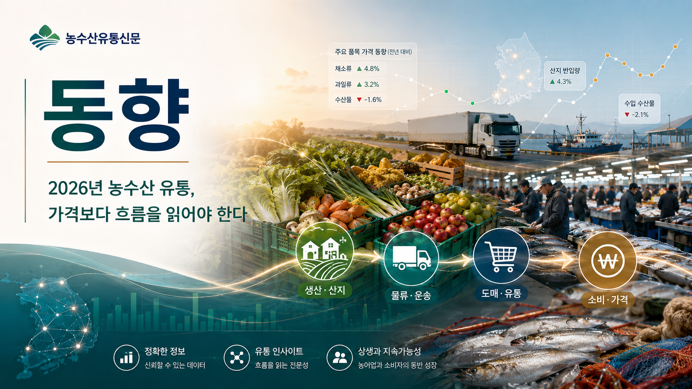
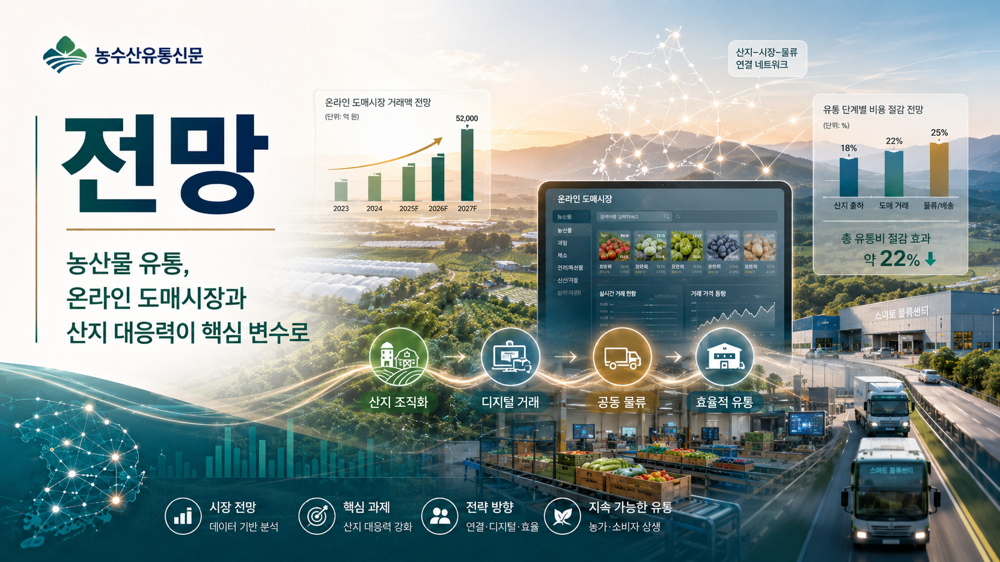
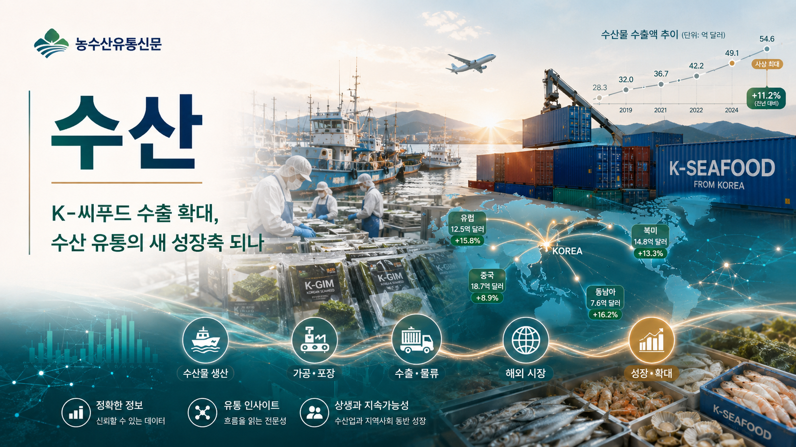
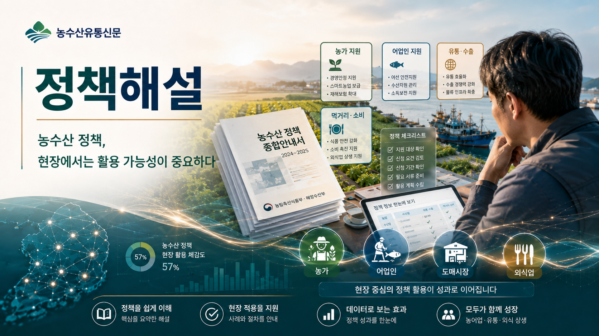
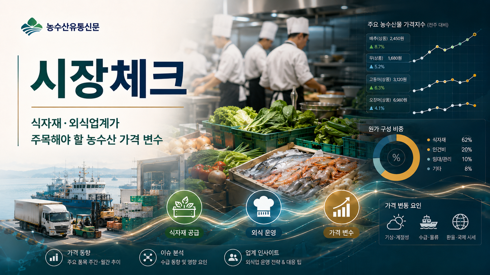

동향 · 신동호 기자
2026년 농수산 유통, 가격보다 ‘흐름’을 읽어야 한다
2026년 농수산 유통시장은 가격 변동 자체보다 그 배경을 읽는 능력이 더 중요해지고 있다. 기후 변화, 생산비 상승, 물류비 부담, 온라인 거래 확대, 수출입 환경 변화가 동시에 작용하면서 품목별 가격 움직임이 더욱 복합적으로 나타나고 있기 때문이다.
농산물 시장에서는 주요 채소와 과일의 작황, 저장 물량, 산지 출하 시기, 도매시장 반입량이 가격 흐름을 좌우하는 핵심 변수로 작용한다. 특히 소비자는 가격 상승만 체감하지만, 현장에서는 인건비, 포장비, 운송비, 선별비 등 유통 전 과정의 비용 부담이 함께 누적되고 있다.
수산물 시장도 마찬가지다. 어획량, 양식 생산량, 수입 물량, 수출 수요, 소비 패턴 변화가 동시에 움직인다. 특히 김을 중심으로 한 K-수산식품 수출 확대는 국내 수산업에 새로운 기회를 만들고 있지만, 내수 가격과 원물 확보 경쟁에도 영향을 줄 수 있다.
이제 농수산 유통 정보는 단순한 시세표를 넘어야 한다. 가격이 올랐는지 내렸는지보다 중요한 것은 왜 움직였는지, 그 변화가 산지와 시장, 식자재 업체, 외식업계, 소비자에게 어떤 영향을 주는지다.
농수산유통신문은 앞으로 품목별 가격·수급 흐름을 정기적으로 분석하고, 공공기관과 연구기관의 자료를 현장 언어로 풀어낼 계획이다. 농수산 유통을 읽는 힘이 곧 시장 대응력이라는 판단에서다.

전망 · 신동호 기자
농산물 유통, 온라인 도매시장과 산지 대응력이 핵심 변수로
농산물 유통 구조가 빠르게 바뀌고 있다. 기존 도매시장 중심의 거래 질서는 유지되지만, 온라인 도매시장과 디지털 거래, 산지 조직화, 물류 효율화가 새로운 경쟁 요소로 떠오르고 있다.
농산물 가격은 생산량만으로 결정되지 않는다. 산지 출하 조절, 저장 물량, 도매시장 반입량, 소비지 수요, 기상 상황, 수입 물량이 함께 작용한다. 특히 기상 이변이 잦아지면서 특정 품목의 단기 가격 급등락 가능성은 더 커지고 있다.
이런 흐름 속에서 산지의 대응력은 더욱 중요해지고 있다. 단순히 생산만 잘하는 것에서 벗어나, 출하 시기 조절, 공동 선별, 품질 관리, 온라인 거래 대응, 물류비 절감 전략까지 갖춰야 안정적인 수익을 기대할 수 있다.
정부가 추진하는 유통구조 개선과 온라인 도매시장 확대는 생산자에게 새로운 기회가 될 수 있다. 다만 디지털 거래가 실제 산지의 소득 개선으로 이어지려면 가격 정보의 투명성, 정산 안정성, 물류 체계, 산지 교육이 함께 뒷받침되어야 한다.
농수산유통신문은 앞으로 주요 농산물의 시세 변화와 산지 이슈, 정책 변화를 함께 분석해 농산물 유통의 흐름을 지속적으로 점검할 예정이다.

수산 · 신동호 기자
K-씨푸드 수출 확대, 수산 유통의 새 성장축 되나
국내 수산식품 산업에서 수출은 점점 더 중요한 성장축으로 자리 잡고 있다. 특히 김은 K-푸드 확산과 글로벌 소비 증가를 바탕으로 대표 수출 품목으로 부상했다. 조미김, 스낵형 김, 건강식품 이미지가 결합되면서 해외 시장에서 한국 수산식품의 인지도도 높아지고 있다.
수산식품 수출 확대는 국내 업계에 긍정적인 기회다. 수출 품목이 다양해지고 시장이 넓어지면 생산자와 가공업체, 유통업체의 판로가 확대될 수 있다. 또한 고부가가치 제품 개발, 위생·품질 관리, 브랜드화가 함께 진행되면 국내 수산업의 체질 개선에도 도움이 된다.
하지만 과제도 있다. 수출 수요가 늘어날수록 원물 확보 경쟁이 심화될 수 있고, 내수 시장 가격에도 영향을 줄 수 있다. 또 특정 품목에 수출이 집중될 경우 생산 변동이나 해외 규제, 물류비 변화에 취약해질 수 있다.
앞으로 수산 유통은 내수와 수출을 함께 보는 구조로 바뀌어야 한다. 산지와 양식업계, 가공업체, 수출업체, 정부 지원 정책이 유기적으로 연결되어야 한다.
농수산유통신문은 K-씨푸드 수출 흐름을 지속적으로 추적하고, 품목별 수출 동향과 국내 시장 영향을 함께 분석할 계획이다.

정책해설 · 신동호 기자
농수산 정책, 현장에서는 ‘지원사업’보다 ‘활용 가능성’이 중요하다
농림축산식품부와 해양수산부, 지자체, 공공기관은 매년 다양한 농수산 정책과 지원사업을 발표한다. 그러나 현장에서는 정책의 양보다 실제 활용 가능성이 더 중요하다.
농가와 어가는 지원사업 정보를 제때 알기 어렵고, 신청 절차와 조건을 이해하는 데 어려움을 겪는 경우가 많다. 산지유통조직이나 소규모 업체 역시 정책 자료를 읽고 자신에게 해당되는 사업을 찾는 데 시간이 걸린다.
정책은 발표되는 순간보다 현장에 적용되는 과정이 중요하다. 어떤 품목과 지역이 대상인지, 신청 조건은 무엇인지, 지원 규모는 어느 정도인지, 실제 부담해야 할 비용은 있는지, 사업 이후 어떤 의무가 따르는지까지 쉽게 정리되어야 한다.
농수산유통신문은 앞으로 정책 보도 방식을 바꾸고자 한다. 단순히 보도자료를 옮기는 것이 아니라, 현장에서 확인해야 할 핵심 조건, 대상자, 기대 효과, 주의할 점을 함께 설명하는 방식이다.
정책 정보는 정확해야 하고, 동시에 쉬워야 한다. 농수산유통신문은 정부와 공공기관의 정책 자료를 현장 중심으로 해설해 실제로 활용할 수 있는 정보로 전달할 계획이다.

시장체크 · 신동호 기자
식자재·외식업계가 주목해야 할 농수산 가격 변수
농수산물 가격 변동은 식자재 유통과 외식업계에 직접적인 영향을 준다. 채소, 과일, 수산물, 축산물 가격이 움직이면 도시락, 급식, 프랜차이즈, 일반 음식점의 원가 구조도 함께 달라진다.
특히 외식업계는 단기 가격 급등에 취약하다. 메뉴 가격은 쉽게 바꾸기 어렵지만 원재료 가격은 빠르게 움직이기 때문이다. 이 때문에 식자재 업체와 외식업체는 주요 품목의 가격 흐름을 사전에 파악하고, 대체 품목과 계약 물량, 저장 가능성, 납품 단가 조정 기준을 미리 준비해야 한다.
농산물은 기상과 산지 출하 상황, 수산물은 어획량과 수입 물량, 양식 생산량, 수출 수요가 핵심 변수다. 여기에 물류비와 인건비, 포장비가 더해지면 실제 현장에서 체감하는 원가는 시세표보다 더 크게 움직일 수 있다.
앞으로 식자재·외식업계는 단순 구매가 아니라 정보 기반 구매 전략이 필요하다. 가격이 오른 뒤 대응하는 것이 아니라, 수급 흐름을 미리 읽고 메뉴 구성과 발주 전략을 조정해야 한다.
농수산유통신문은 식자재·외식업계가 참고할 수 있는 품목별 가격 변수와 주간 수급 체크포인트를 정기적으로 제공할 예정이다.